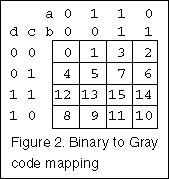

The Exclusive-OR - Part 3, Multiple Solutions
You can find a link to a comprehensive source of exclusive-OR papers at the end of this page. Please follow this link to find the latest work by other authors on this subject. I have appended my original list of references at the end of this page.
In this addendum I will refer to my method of simplifying XOR expressions as Warren-Smith's Simplification Method (WSSM). The terminology that I use is explained in Parts 1 and 2.
Multiple solutions for minimised XOR functions
Boolean functions expressed with XOR operators frequently have multiple solutions. This part of the article on XOR logic will show how multiple solutions can be found and will give a few examples.
Figure 1 shows a function with two solutions. The two solutions each have the same number of terms and the same number of letters. The two solutions are found by starting the simplification process by combining the term xy with either of the two terms xyz or xyw. In each case in this example a different but equally good solution is obtained. These solutions cannot be found by the theorems for different arrangements of primes that I gave in Part 2.
In general if there is more than one way to progress the simplification process, starting with the C2 form you can expect more than one solution. Examining the function in the C2 form will therefore show you if multiple solutions are possible.
If you arrange the minterms in a Boolean function as a binary number, in sigma notation order, and give minterms present in the function the value 1 and absent minterms the value 0, you can represent each function by a binary number (or its decimal equivalent). For four variables there are 16 minterms. Therefore for four variables there are 216 or 65536 possible functions. This will include all degenerate functions and duplications due to arbitrary rearrangements of variables and primes.
There are only 28 or 256 functions of three or less variables, so the degenerate functions are an insignificant proportion of the total. If you wanted to list all the five variable functions you would get some 4.3 billion functions!
The following are a few examples of functions in both minterm and C2 form.
- 0010010111001101 XOR: 1 a ab c ac bc abc abd acd bcd
- 0010010111001110 XOR: a b ab ac abc d bd abd cd acd
- 0010010111001111 XOR: 1 c bc ad bcd abcd
- 0010010111010000 XOR: c ac abc d ad acd
- 0010010111010001 XOR: 1 a b ab bc bd abd cd bcd abcd
- 0010010111010010 XOR: a ab c d abd abcd
The binary numbers on the left of this list are the C1 expansions of the functions with m0 on the right and m15 on the left. The terms on the right of the list are the C2 terms of these functions. You can see how the C1 terms map onto a K-map in Figure 2.
If you make a comprehensive list of functions in the C2 form, what you find is that there are a great many cases where multiple solutions should be possible.
Another example
I picked the function in the top line of the above list as a possible extreme example of possible multiple solutions and ways to progress the simplification process.
Figure 3 shows eight possible ways to start the simplification process for this function. The solution or solutions for each case are shown in the figure. These solutions are obtained by combining each two variable term with three variable terms. There are cases where two or three of the two variable terms can be combined with the same three variable term. I didn't follow up some of the solutions further than shown. Ultimately there were two equally good solutions. In this function the inclusive-OR solution requires only three terms, so would be preferable.
There are four variables in the example in Figure 1 and the terms with the most variables have 3 variables. If there is a term in a function with all four variables present, all terms with three variables will be eliminated by WSSM. However, there may still be terms with one variable that can combine with the two variable terms in more than one way, which may give rise to more than one way of finding a solution. With five or more variables one could expect lots of ways of finding multiple solutions at different levels.
Figure 4 shows the two results for this function. This figure shows an interesting symmetry.
Both of the multiple solution examples given here have two solutions both of which have the same complexity of terms. However, in general there can be many solutions, particularly if there are many variables in the function.
The majority function with three variables provides a case where there are four solutions.
i.e. f
= ab + ac + bc 1... = ab ac bc 2... = ab' ac' bc 3... = a'b ac bc' 4... = ab a'c b'c These solutions are most easily found by applying T12b in each of the three possible ways, starting with the C2 form in the second line. The four solutions are plotted in Figure 5.
When there are many terms in a minimised function with the same number of variables, there is scope for T12b to create multiple solutions.
Conclusion
This addendum has considered the question of multiple minimisation solutions of XOR functions and has shown how to recognise and find them.

Link to a major source of references on XOR logic. This should be your starting point if you wish to follow up the latest developments in this subject:
http://www.ee.pdx.edu/~mperkows/=REED-MULLER/bibliography.html
1. Karnaugh, M. "The Map Method for Synthesis of Combinatorial Logic Circuits." A.I.E.E Trans., Part 1 Communications and Electronics, Vol. 72 pp 593 - 599, November 1953.My original list of references on XOR logic
The references that first got me interested in this subject are all from the 1950s and early 1960s. I did my initial investigation of this subject in mid 1960s. There may have been other papers but I no longer have the details.
2. McCluskey, E.J. Jr. "Minimization of Boolean Functions." Bell System Tech. J., Vol. 35, No. 6, pp 1417 - 1444, November 1956.
3. Muller, D.E. "Application of Boolean Algebra to Switching Circuit Design and to Error Detection." IRE Trans-Electronic Computers EC-3, pp 6 12, September 1954.
4. McNaughton, R. and Mitchel, B. "The Minimality of Rectifier Nets with Multiple Outputs Incompletely Specified." J. Franklin Inst. Vol. 264, pp 457 - 480, December 1957.
5. Bartee, T.C. "Computer Design of Multiple Output Logical Networks." IRE Trans-Electronic Computers, Vol. EC-10, pp 21 - 30, March 1961.
6. Huffman, D.A. "The Synthesis of Linear Sequential Coding Networks." Information Theory - Edited by C.E. Cherry, Butterworth Scientific Publications 1956, pp 77 - 95.
7. Curtiss, H.A. "A New Approach to the Design of Switching Circuits." D. van Nostrand Co. Inc., 1962.
8. Bartee, T.C., I.L. Lebow and I.S. Reed, "Theory and Design of Digital Machines." McGraw-Hill Book Co. 1962.
(Copyright) David N. Warren-Smith, CPENG
Digital Logic Systems, South Australia
3 October 2000
[ Top for navigation menu ]